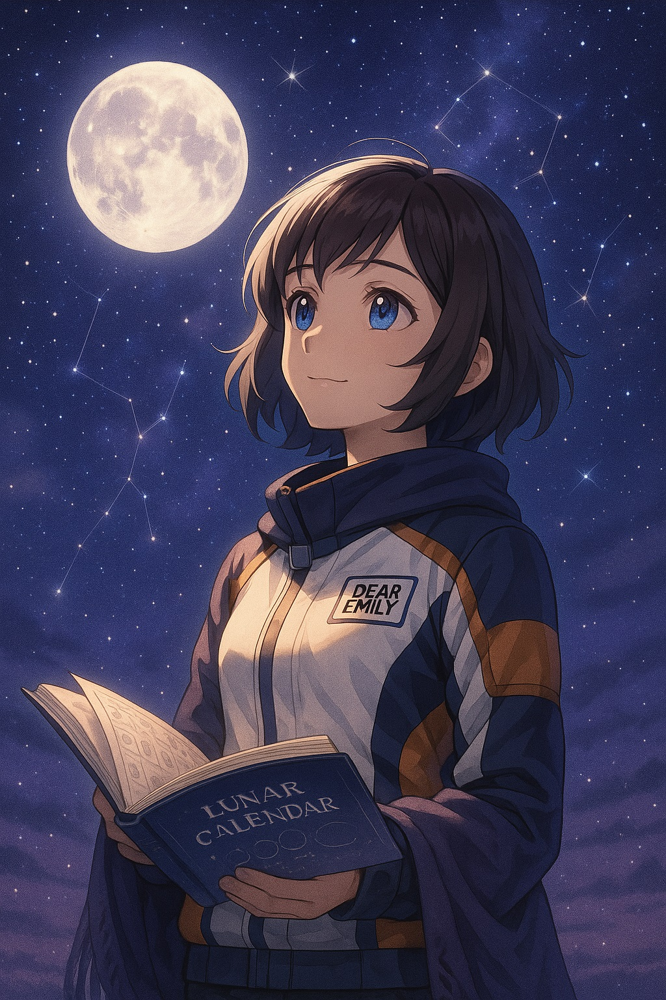

ステップ3｜月と暦の秘密を知ろう｜宇宙とわたしをつなぐ時間のしくみ
🌙 宙ガールの成長ノート Vol.3｜時間は空から生まれた？
都会の喧騒（けんそう）から少し離れたベランダで、エミリーは温かいハーブティーを片手に夜空を見上げていました。宙ガールへの道を歩み始めてから、彼女の日常は少しずつ変化しています。星の名前を覚え、星座の神話に触れるうち、夜空がただの暗闇ではなく、語りかけてくる壮大な物語の舞台に思えてきました。
特に、ここ最近エミリーが気になっているのは「月」の存在でした。
「そういえば、満月の夜って、なんとなく寝つきが悪かったり、心が落ち着かなかったりする気がする…」
ある日、友人とそんな会話をしたとき、彼女はふと、疑問に思いました。「それって、ほんとに“気のせい”なのかな？」
潮の満ち引き、女性の生理周期、漁師が魚の獲れ時を知るための月の動き、農家が作物の植えどきを決めるための月齢、そしてお祭りや行事、占星術まで——。よく考えてみれば、私たちの暮らしのそこかしこに、月のリズムが静かに、しかし確実に流れていることに気づきます。
このステップでは、そんな私たちの日常に深く根ざした「宇宙がつくる時間」の仕組みに迫ります。月と暦の切っても切れないつながりを知ることで、空から感じる力が育まれ、日々の暮らしがより豊かになることを目指します。
🧭 ステップ3の目的
このステップで、エミリーと一緒に以下のことを学び、理解を深めていきましょう。
- 月の満ち欠けと周期を理解する： 月がどのように形を変え、それがどのような周期で繰り返されているのかを、視覚的にわかりやすく学びます。
- 太陽暦・太陰暦・太陰太陽暦の違いを知る： 私たちが普段使っている暦が、どのようにして宇宙の動きと結びついているのか、その歴史的背景と多様性を学びます。
- 暦と季節・文化・天文イベントの関係を学ぶ： なぜ特定の行事がこの時期に行われるのか、その由来が宇宙のリズムとどう関わっているのかを探ります。
- 自然のリズムを感じる視点を持つ： 月や太陽、星の動きが、私たちの心身や地球の自然に与える影響について考え、宇宙と自分とのつながりを実感します。
🌕 月の満ち欠けと周期｜図解で理解しよう

「月って毎日形が変わるけど、あれってどういう仕組みなんだろう？」
エミリーは、ある日の夜、空に浮かぶ半月を見上げながら思いました。月の形が欠けたり満ちたりするのは、月が自ら光っているわけではなく、太陽の光を反射して輝いているからです。そして、その形は、地球から見た月と太陽の位置関係によって決まります。月が地球の周りを約1ヶ月かけて公転（こうてん）する中で、太陽に照らされている部分が変化し、私たちには異なる形に見えるのです。
下の表で、月の満ち欠けとその名称、そして新月からの大まかな日数の目安を見てみましょう。
| 月の形 | 名称 | 目に見える形 | 日数目安 |
|---|---|---|---|
| 🌑 | 新月 | 月が見えないか、ごく薄く見えるのみ。太陽と月が地球から見て同じ方向にあるため、太陽光が当たっている面が地球からは見えません。 | Day 0 |
| 🌒 | 三日月 | 新月を過ぎて数日後、西の空に細い右側の弧（みかづき）として現れます。 | Day 3 |
| 🌓 | 上弦の月 | 月の右半分が光って見える半月。月の出から真夜中にかけて空に見えます。 | Day 7 |
| 🌔 | 十三夜 | 満月になる少し前、月がほぼ満月に近い状態で見える。 | Day 13 |
| 🌕 | 満月 | まんまるに輝く月。太陽の光が月の前面全体に当たり、地球からは全てが照らされて見えます。 | Day 15 |
| 🌖 | 十六夜以降 | 満月を過ぎると、右側から少しずつ欠けていく。十六夜（いざよい）、立待月（たちまちづき）など、欠け具合で風情ある名前がついています。 | Day 16+ |
| 🌗 | 下弦の月 | 月の左半分が光って見える半月。真夜中から月の入りにかけて空に見えます。 | Day 22 |
| 🌘 | 有明の月 | 下弦の月を過ぎると、夜明け前の東の空に細い左側の弧として見えます。 | Day 27 |
🌟 宙ガールPOINT！
月の満ち欠けの周期は、約29.5日。これは、私たちが「約1ヶ月」と呼ぶ時間の長さとほぼ同じです。つまり、カレンダーの「1ヶ月」は、月の満ち欠けという宇宙のリズムがもとになっているのです。
新月と満月は、地球、月、太陽がほぼ一直線に並ぶ時に起こります。新月は太陽と月が同じ方向、満月は太陽と月が反対方向に位置します。この位置関係が、私たちに見える月の形を決定しているのです。月の動きを知ることは、宇宙の壮大なバレエを見ているような体験です。
📅 宇宙と暦のつながり

「私たちが使ってるカレンダーって、どうやって決まったんだろう？」
エミリーは、月の満ち欠けの図を眺めながら、ふとそんな疑問を抱きました。私たちが普段使っているグレゴリオ暦は、実は宇宙の動き、特に太陽と月の動きを基にして作られています。人類は古くから、正確な時間を測るために、空の動きを観察し、それを記録してきました。
暦の種類とその特徴
地球上には、その文化や歴史に応じて様々な種類の暦が存在します。主なものは以下の三つです。
| 暦の種類 | 特徴 | 主な採用文化・用途 |
|---|---|---|
| 太陽暦 | 地球が太陽の周りを一周する公転周期（約365.24日）を基にした暦。季節とのずれがほとんどなく、農耕社会で特に重要視されました。 | 現代のグレゴリオ暦（世界で広く使われている）。古代エジプト暦などが原型。 |
| 太陰暦 | 月の満ち欠け（約29.5日）を1ヶ月とし、12ヶ月で1年とする暦（約354日）。季節とのずれが生じやすい。 | イスラム暦（ヒジュラ暦）など。宗教的な行事の決定に用いられることが多い。 |
| 太陰太陽暦 | 太陰暦を基本としながら、季節とのずれを補正するために、数年に一度「閏月（うるうづき）」を挿入する暦。 | 日本の旧暦や、中国の旧暦（陰暦）、ユダヤ暦など。農業や年中行事に深く結びついている。 |
私たちが現在使っているグレゴリオ暦は太陽暦であり、地球が太陽の周りを一周する周期に合わせています。そのため、春分や夏至、秋分、冬至といった季節の節目が毎年ほぼ同じ日付に来るのです。
🌾 季節行事も空から生まれた

エミリーは、日本の年中行事の多くが、実は宇宙の動き、特に太陽や月のリズムと深く結びついていることを知って驚きました。
- 二十四節気（にじゅうしせっき）：春分、夏至、秋分、冬至など、日本の美しい四季を細かく分ける二十四の節目は、太陽が黄道上を移動する動き（地球の公転）を基に定められています。これらは、農作業の目安として古くから利用され、私たちの食文化や生活習慣にも大きな影響を与えてきました。例えば「立春（りっしゅん）」は太陽暦に基づいているため、毎年ほぼ同じ日付に来るのです。
- お月見（中秋の名月）：毎年秋に開催されるお月見は、太陰太陽暦に基づいています。旧暦の8月15日（中秋）の夜、最も美しく見えるとされる満月を鑑賞する行事です。太陽暦に直すと毎年日付が変わるのはこのためです。エミリーは、この「ずれる」ということが、月のリズムを感じる上で重要だと感じました。
- 七夕（たなばた）：7月7日に行われる七夕は、織姫星（おりひめぼし）と彦星（ひこぼし）という星の伝説に由来しますが、この日付もまた、暦の交差点に位置しています。地域によっては旧暦で行われることもあり、その場合、太陽暦の8月頃になるため、梅雨が明けてよりクリアな星空を楽しむことができます。
🧠 宙ガールPOINT！

「“時間”って、人間が勝手に作ったものだと思ってたけど、そうじゃなかったんだ。“宇宙の運動”を測るものだったんだ！」
エミリーは、この事実に気づいたとき、まるで頭の中のパズルがカチッとハマったような感覚を覚えました。私たちが日々使っている「時」という概念が、実は遥か遠い宇宙の壮大なリズムと直結している。この発見は、エミリーの宇宙に対する見方を大きく変えました。
🗓 現代生活に潜む「空の暦」

エミリーが夜空のリズムを意識し始めてから、彼女の日常にも、宇宙のサイクルが潜んでいることに気づくようになりました。
| 日常のこと | 実は… |
|---|---|
| 潮の満ち引き | 海の潮の満ち引きは、月の引力と太陽の引力によって引き起こされます。特に新月と満月の時には、太陽と月の引力が重なり、潮の満ち引きが最も大きくなります（大潮）。漁師さんたちは、この月のリズムを利用して漁に出るタイミングを決めています。 |
| 女性の生理周期 | 多くの女性の生理周期が、月の満ち欠けの周期（約29.5日）に近いと言われています。これは偶然の一致かもしれませんが、古くから月と女性の身体のリズムには深い関連があると考えられてきました。 |
| 農作業のタイミング | 「月のリズム農法」というものがあるように、月の満ち欠けに合わせて作物の種まきや収穫を行うことで、より良い収穫が得られるという考え方があります。例えば、新月の時期は根菜類の種まきに、満月の時期は葉物野菜の収穫に適しているなど、昔ながらの知恵が受け継がれています。 |
| 気分や体調の変化 | 満月の夜に心が落ち着かない、眠れないと感じる人もいます。科学的根拠はまだ解明されていませんが、多くの人が月の影響を感じると言います。月は私たちの心身にも、目に見えない形で影響を与えているのかもしれません。 |
| 各地のお祭りや行事 | 日本各地に伝わる伝統的なお祭りや行事の中には、旧暦（太陰太陽暦）の日付に基づいているものが少なくありません。例えば、地域によっては旧暦の七夕や、旧暦のお盆（旧盆）を行う場所があります。これらは、古くからの月のリズムを大切にする文化が今も息づいている証拠です。 |
| ことわざや慣用句 | 「月夜に釜を抜かれる（油断すること）」「月とすっぽん（全く似ていないこと）」「月のない晩に星を頼む（不可能なことを望む）」など、月に関する多くのことわざや慣用句が私たちの言葉の中に残っています。これらは、昔から月が私たちの生活に深く根ざし、文化や知恵の一部となっていたことを示しています。 |
私たちの日常は、知らず知らずのうちに宇宙のリズム、特に月と太陽の動きに深く影響を受けています。この「空の暦」を意識することで、日々の生活がより豊かに、そして宇宙とのつながりを感じられるようになるでしょう。
📝 エミリーのノート：宇宙の時間を感じて

エミリーは、月と暦の秘密を知ってから、日々の時間の流れに対する感覚が大きく変わりました。彼女のノートには、そんな新しい発見と気づきが綴られていました。
📝エミリーのメモより
「私たちが毎日使っているカレンダーが、こんなにも宇宙の動きと深くつながっているなんて、本当に驚きだ。特に、月の満ち欠けが『1ヶ月』の始まりだったなんて、感動しちゃった！ 昔の人は、空を見上げて、月の形が変わるたびに時間を数えていたんだと思うと、ロマンチックだよね。
これまでは、時間がただ漠然と流れていくものだと思ってた。でも、今は違う。月が満ちては欠け、太陽が季節を連れてくる。この一つ一つのリズムの中に、自分が生きているんだって実感できるようになった。なんだか、地球という大きな生き物の一部になったみたい。
これからは、カレンダーを見るたびに、今日が新月なのか、満月なのか、どんな季節の節目なのかを意識してみようと思う。そうすれば、忙しい日々の中でも、空が教えてくれる自然のリズムを感じて、もっと穏やかに、自分らしく過ごせる気がする。
宇宙って、本当に私たちにたくさんのことを教えてくれるんだな。この学びを、日々の生活に活かしていきたい。」
エミリーのノートには、宇宙の時間の仕組みを知ることで、日々の暮らしがより豊かになった喜びと、これからも学び続けたいという前向きな気持ちがあふれていました。彼女の宙ガールとしての旅は、着実に深まっています。
🌟 まとめ：月と暦の秘密は、宇宙へのパスポート

月と暦の秘密を知ることは、単に天文の知識を増やすだけでなく、私たちと宇宙、そして自然との深いつながりを再認識させてくれます。
私たちが普段意識することのない時間の流れも、宇宙の壮大なリズムと一体であることが分かれば、日々の暮らしがもっと神秘的で、意味深いものに感じられるはずです。
さあ、あなたも今日から、カレンダーを見るたびに空を見上げてみませんか？ 月の満ち欠けや季節の移ろいに意識を向けるだけで、きっと新しい発見があるはずです。空が教えてくれる時間の秘密は、私たち自身の「宇宙へのパスポート」となるでしょう。
📅 次回予告：星を見る準備をしよう！

月と暦の奥深さを知ったエミリーは、次なるステップへ進みます。
次回は、宙ガールへの旅の第三歩、ステップ4「星を見る時間・方角・天気と光の話」です。
美しい星空を楽しむためには、最高のコンディションで観測することが大切です。都会の光害を避け、星がよく見える時間帯や方角を見つける方法、そして天気予報のチェックポイントなど、実践的なアドバイスをエミリーと一緒に学びましょう。
🌟 さあ、夜空のベストスポットへ！
次回も、宇宙の魅力を最大限に引き出すためのヒントをお届けします。お楽しみに！